Desarrollo de Software
Diseño y desarrollo de aplicaciones y sistemas de software estructurados.
SOFTWARE ENGINEERING · ARTIFICIAL INTELLIGENCE
Jheferson Cholan
Desarrollo arquitecturas de software estructuradas, aplicaciones web modernas y modelos de aprendizaje automático y visión por computadora orientados a resolver problemas del mundo real.
01 / PERFIL
Una formación orientada a construir software útil, mantenible y conectado con problemas reales.
Soy Jheferson Rafael Cholan Fernández, estudiante de Ingeniería de Software con Inteligencia Artificial en SENATI, Cajamarca. Actualmente curso el sexto ciclo y desarrollo proyectos académicos y prácticos para seguir fortaleciendo mi criterio técnico y profesional.
Me interesa crear aplicaciones web y de escritorio, diseñar y optimizar bases de datos, y explorar cómo la inteligencia artificial, el machine learning y la visión artificial pueden aportar soluciones concretas a necesidades reales de las organizaciones.
02 / CAPACIDADES
Capacidades técnicas y profesionales aplicadas al desarrollo de software, plataformas web e inteligencia artificial.
Diseño y desarrollo de aplicaciones y sistemas de software estructurados.
Creación de interfaces y aplicaciones web funcionales, fluidas y responsive.
Diseño de lógica de negocio, servicios e integración eficiente con bases de datos.
Diseño, modelado entidad-relación, consultas SQL y gestión de bases relacionales.
Aplicación de principios de POO para construir código modular, desacoplado y mantenible.
Preparación de datos, entrenamiento, evaluación y análisis comparativo de modelos.
Procesamiento y análisis de imágenes mediante visión por computadora y modelos YOLO.
Exploración, depuración y visualización de datasets para extraer conclusiones útiles.
Análisis estructurado de requerimientos y desarrollo de soluciones algorítmicas.
Gestión de versiones, ramas y flujo colaborativo de código mediante Git y GitHub.
Trabajo organizado y entregas iterativas mediante marcos Scrum y tableros Kanban.
Comunicación clara, colaboración técnica y adaptabilidad en proyectos multidisciplinarios.
03 / ECOSISTEMA
Un mapa visual del stack documentado en mis proyectos y formación académica.
04 / PROYECTOS
Proyectos académicos y prácticos desarrollados en software, aplicaciones web, bases de datos e inteligencia artificial, con detalles de tecnologías, estado y acceso a su caso de estudio.
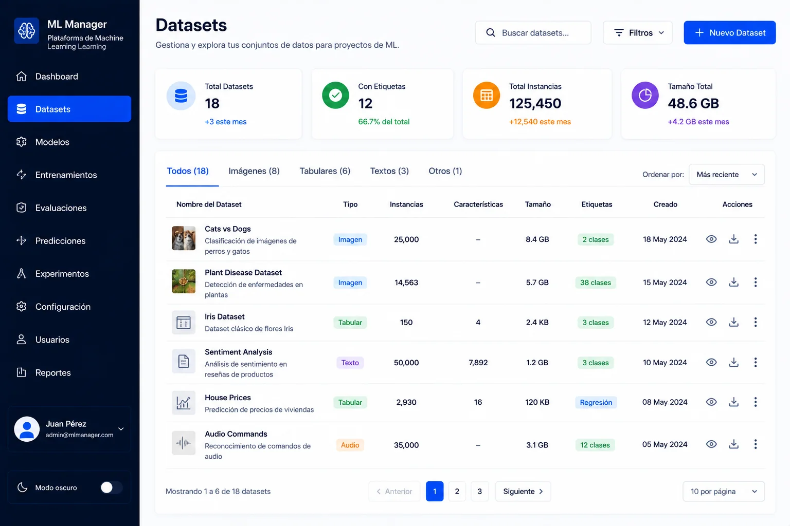
Análisis y procesamiento de datos con modelos para clasificación y predicción usando datasets reales.
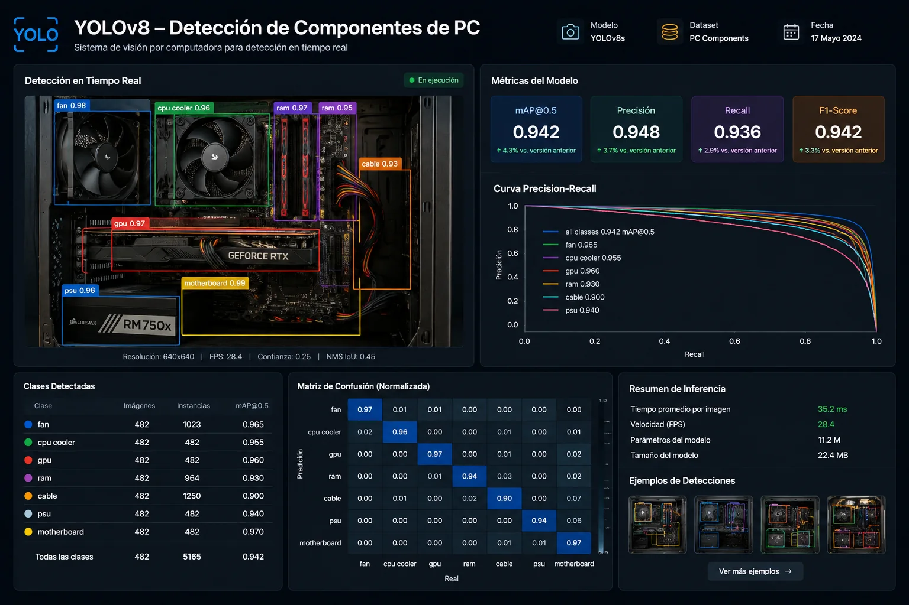
Exploración de visión por computadora con una captura real del proyecto.
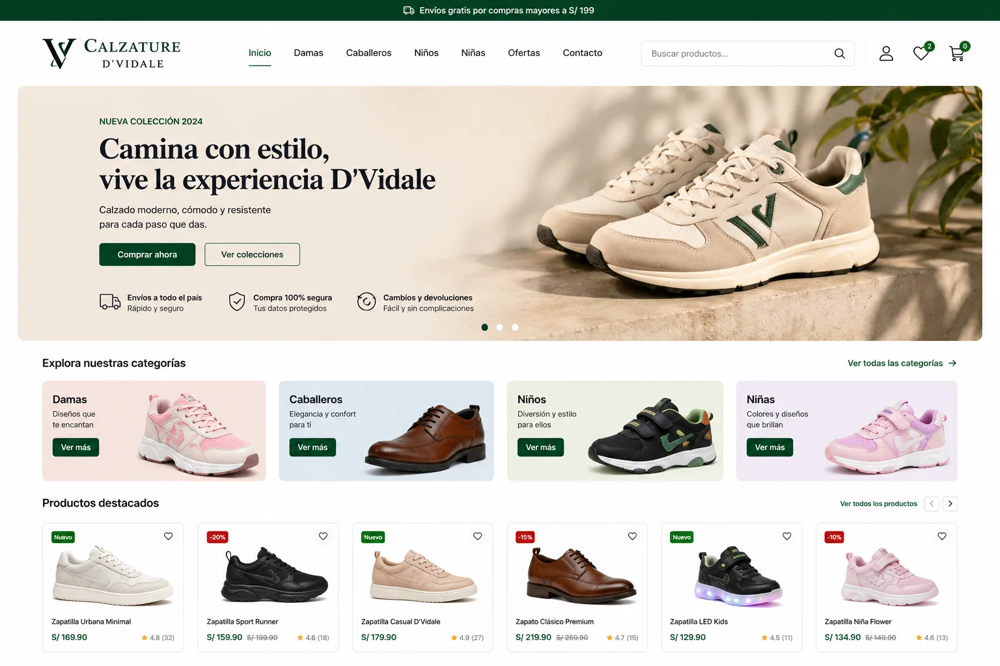
Tienda virtual con usuarios, catálogo, carrito de compras e integración de pagos.
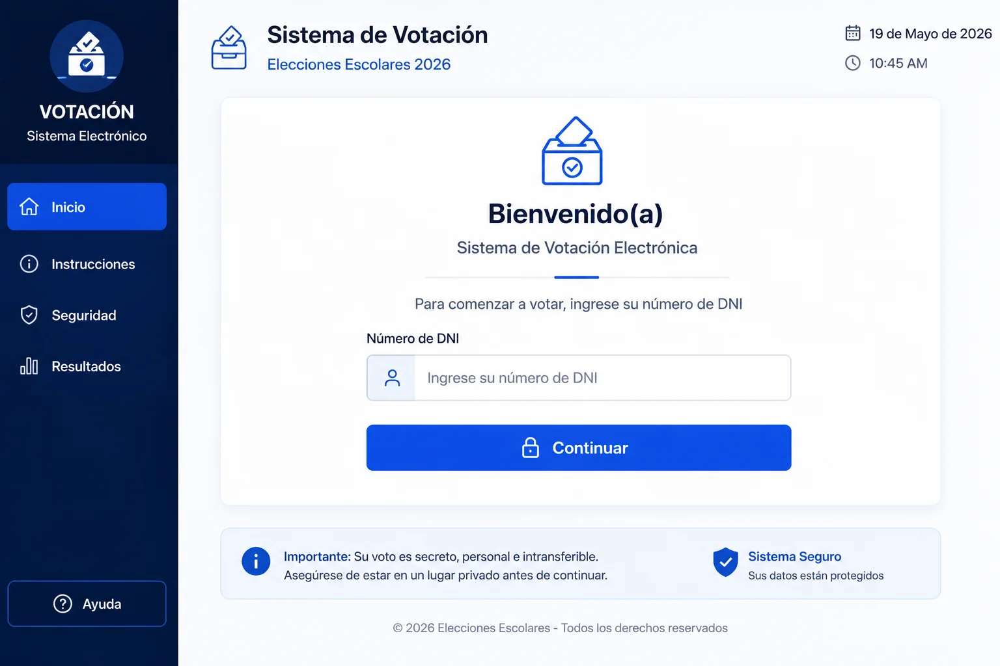
Proyecto con pantallas de inicio, elección y cómputo de resultados.
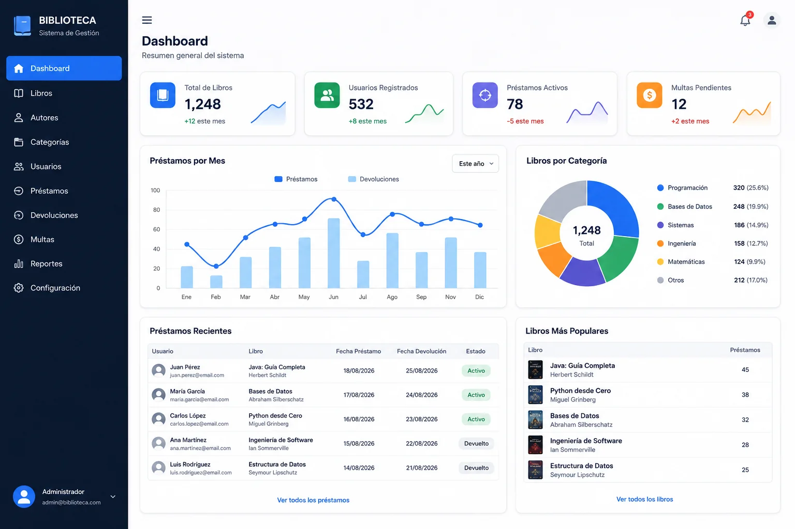
Aplicación de escritorio para registrar, buscar, modificar y eliminar libros, autores y disponibilidad.
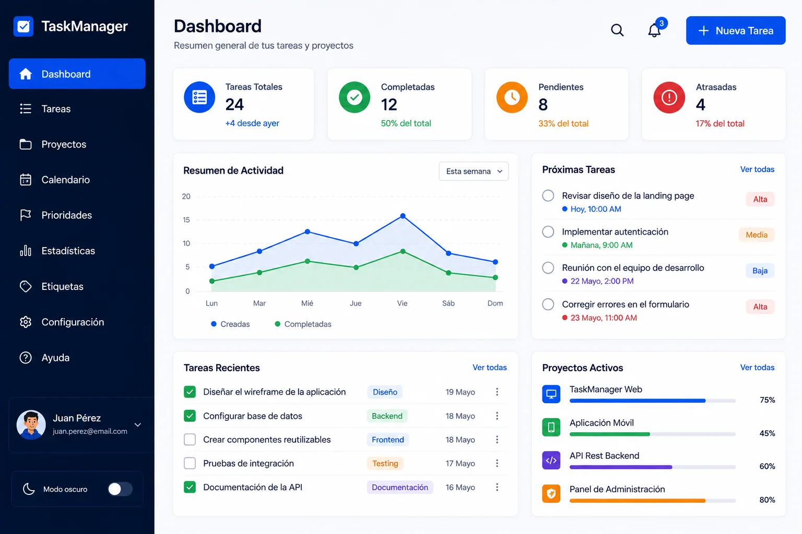
Interfaz real de gestión de tareas con dashboard, listado y formulario.
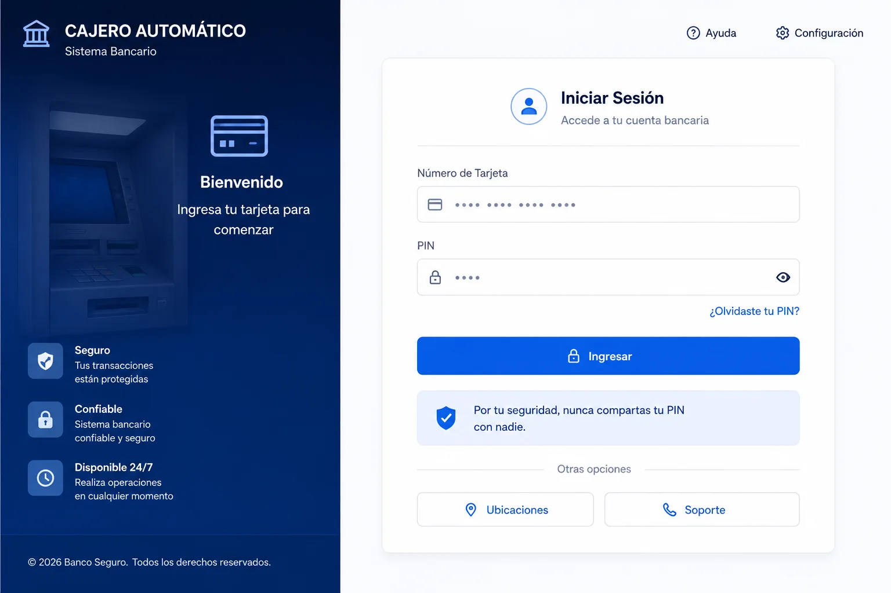
Simulador con operaciones de depósito, retiro y consulta de saldo, con validación e interfaz gráfica.
Gestión de clientes, préstamos y pagos conectada a bases de datos empresariales mediante JDBC.
Ver en GitHub05 / IA Y DATOS
Ingeniería, datos y resultados visuales en una selección de capturas reales.
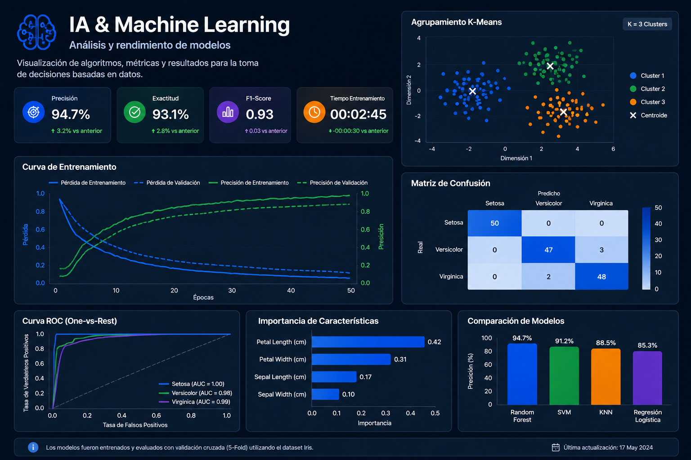
Un espacio para observar el flujo de análisis y los gráficos del trabajo con datos.
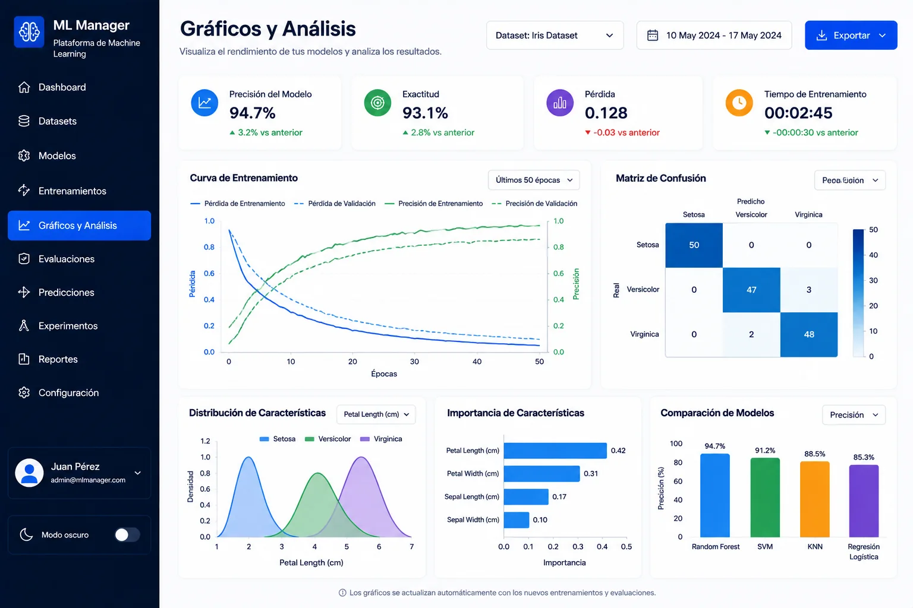
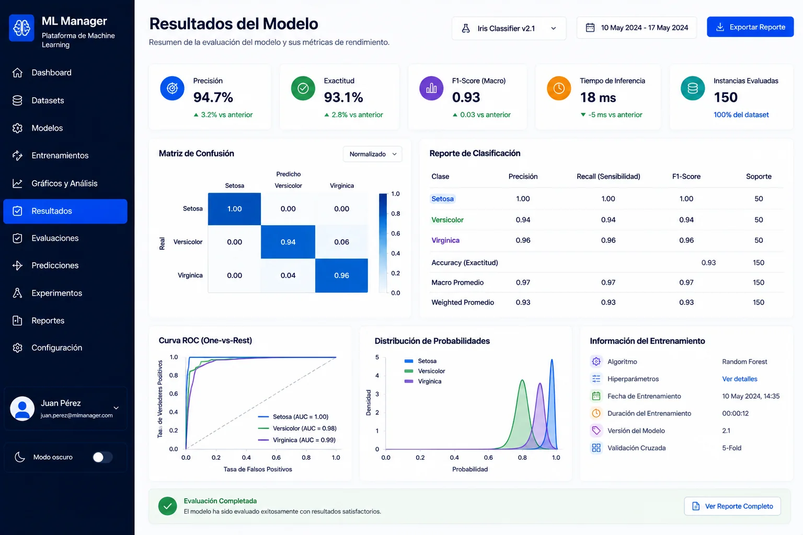
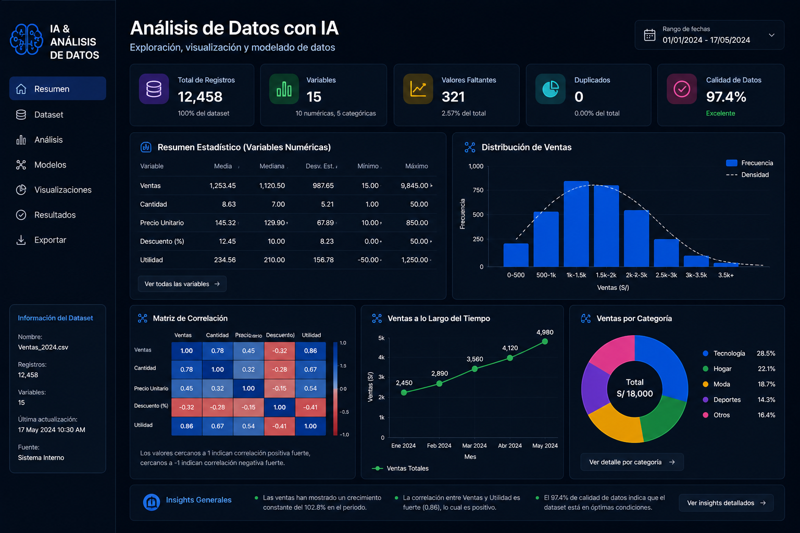
06 / EXPERIENCIA
Desarrollo web aplicado a una necesidad institucional real.
I.E. Ramón Castilla · Cajamarca
Desarrollo de un sistema web de inventario y gestión interna en PHP, con módulos por rol, autenticación, recuperación de cuenta y exportación de datos.
07 / FORMACIÓN
La base académica desde la que desarrollo proyectos de software e inteligencia artificial.
SENATI · Cajamarca, Perú · 6to ciclo
Formación en desarrollo de software, bases de datos, metodologías ágiles, inteligencia artificial y machine learning mediante proyectos académicos prácticos.
08 / CERTIFICACIONES
Certificaciones reales obtenidas en Cisco Networking Academy.
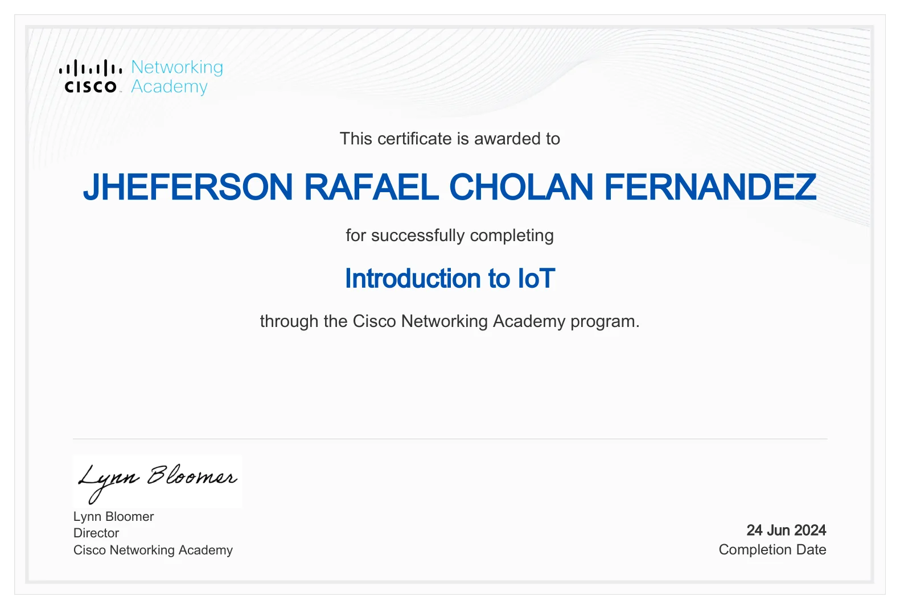
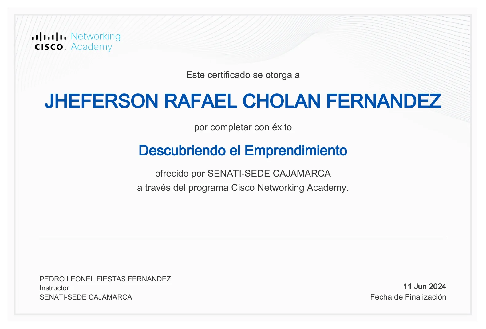
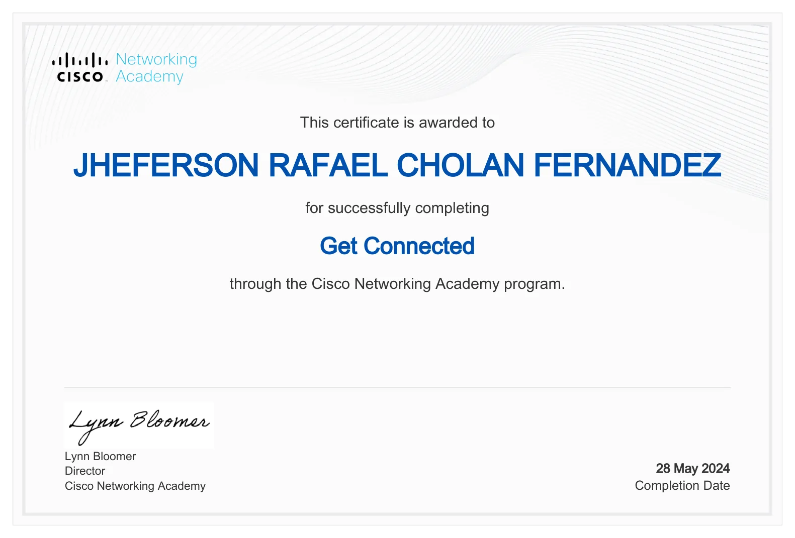
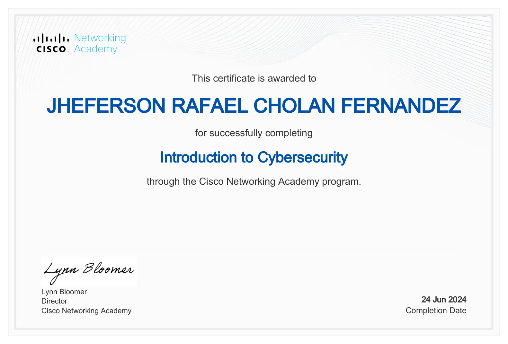
09 / CONTACTO
Estoy disponible para oportunidades profesionales, pasantías y colaboraciones en ingeniería de software e inteligencia artificial.